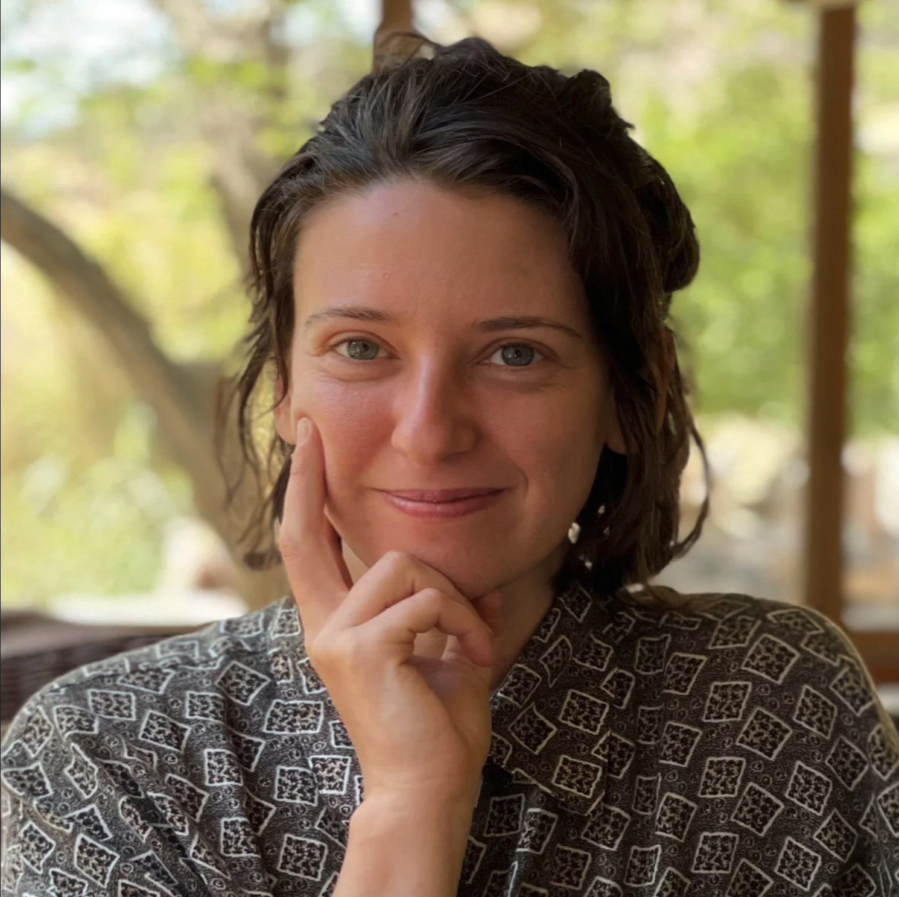

I am interested in researching and understanding dynamic co-evolving systems, specifically in the context of how societies adapt to technology.
I have worked on cognitive science experiments with interfaces, user-interface research, speculative visualization projects, and I have a Masters in Evolutionary
Neuroscience, analyzing the evolution of sensory systems across mammals. I am interested in understanding our sensory and cognitive
interdependency with both technological and ecological systems. I have skills in research and data analysis using R studio and a creative interest in
Agent-based modeling, Spatial Simulation, Natural Computation and Generative Algorithms. I have exhibited work at Krowswork, Aggregate Space, New York
Studio School, with performances at The Lab, SFEMF, CCRMA and Gray Area Center for the Arts. Along with teaching I am currently working on a various projects
such as: alternative taxonomical representation, "Rewilding Learning" and "You are in the Sensory Empire."

press any key twice to start/stop movement ...
you can click and drag to orbit